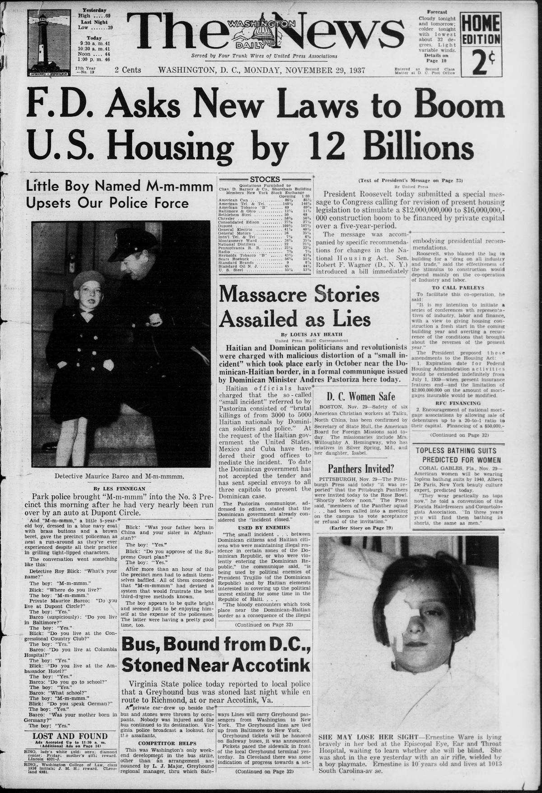

Trujillo EraEra de Trujillo
Massacre Stories Assailed as LiesHistorias de masacre atacadas como mentiras
The Washington Daily News reported that the Dominican government had not yet accepted a mediation offer tendered by the United States, Mexico, and Cuba following the killings of Haitian nationals by Dominican soldiers and police. In a communiqué to editors, Dominican Minister Andrés Pastoriza stated that the Dominican government considered the incident closed. Pastoriza asserted that the border encounters involving illegal Haitian residents were being exploited by Trujillo's political enemies and by Haitian factions attempting to obscure domestic unrest.
El Washington Daily News informó que el gobierno dominicano aún no había aceptado la oferta de mediación presentada por Estados Unidos, México y Cuba a raíz de la matanza de ciudadanos haitianos a manos de soldados y policías dominicanos. En un comunicado remitido a directores de periódicos, el ministro dominicano Andrés Pastoriza manifestó que su gobierno daba el asunto por concluido. Pastoriza sostuvo que los choques fronterizos protagonizados por residentes haitianos en situación irregular estaban siendo manipulados por adversarios políticos de Trujillo y por facciones haitianas empeñadas en encubrir sus propias revueltas internas.
Dominican Ship Boilers Searched, No Galindez Murder Clues FoundRegistran las calderas de un barco dominicano sin hallar pistas del asesinato de Galíndez
PassagePasaje
the wheel. He was as resolute as Horatio at the bridge or Hopalong Cassidy at the rustlers' hideout. In fact, Lanny came out without a scratch, but the cars didn't. Damage was abou…
An Associated Press dispatch from Santo Domingo dated September 10Un despacho de la Associated Press desde Santo Domingo fechado el 10 de septiembre
For the first time in a week, the city's population had enough food after a small fleet of relief ships and trucks from the interior brought sufficient provisions, medicines, shelters, clothing, doctors, nurses, and relief workers to feed 10,000 or more people in the bread lines. In addition, surgical care for the injured was bolstered by the opening of the 1,000-bed Roosevelt Emergency Tent Hospital.
Un despacho de la Associated Press fechado el 10 de septiembre en Santo Domingo informa que infantes de marina británicos y la unidad médica del crucero británico Danae desembarcaron para asistir a las autoridades dominicanas y relevar a las tropas dominicanas de guardia desde el huracán, tras los arreglos entre el presidente Trujillo y el encargado de negocios británico Gallienne, que también pusieron a disposición del presidente a los técnicos y el hospital del buque de guerra. Por primera vez en una semana, la población de la ciudad contó con alimentos suficientes después de que una pequeña flota de barcos de socorro y camiones procedentes del interior trajeron provisiones, medicinas, refugios, ropa, médicos, enfermeras y trabajadores de auxilio suficientes para alimentar a 10,000 o más personas en las filas de reparto. Además, la atención quirúrgica a los heridos se vio reforzada con la apertura del Hospital de Campaña de Emergencia Roosevelt, dotado de 1,000 camas.

Massacre Stories Assailed as Lies
An article in The Seattle star on the international use of Reo passengerUn artículo en The Seattle star sobre el uso internacional de los automóviles de pasajeros Reo
According to the report, the Dominican government uses many Reo vehicles, and the U.S. Marines stationed at San Domingo operate a large fleet of Reo speed wagons.
Un artículo en The Seattle star sobre el uso internacional de automóviles de pasajeros y camiones ligeros Reo informa que durante el año se nombraron distribuidores de Reo en San Juan, Puerto Rico, y en Santo Domingo, República Dominicana. Según el informe, el gobierno dominicano utiliza muchos vehículos Reo, y los infantes de marina estadounidenses destacados en Santo Domingo operan una gran flota de camiones ligeros Reo.
Instructions published in The West Virginia news direct that packagesInstrucciones publicadas en The West Virginia news indican que los paquetes
Shipments are to be addressed to Major John M. Caton, 3rd, Chairman of the Dominican Chapter of the American Red Cross in Santo Domingo City, Dominican Republic. Chapters preferring not to accept the quota are asked to send an equivalent check to Division Headquarters marked for purchases of clothing material for the Virgin Islands, along with a pair of sheets and a pair of pillow cases to the Manager of the Washington Division.
Las instrucciones publicadas en The West Virginia news indican que los paquetes deben enviarse por paquete postal con un peso máximo de 22 libras por paquete y una tarifa máxima de 12 centavos por libra, con las declaraciones de aduana ordinarias de paquete postal. Los envíos deben dirigirse al mayor John M. Caton, 3rd, presidente del Capítulo Dominicano de la Cruz Roja Americana en la ciudad de Santo Domingo, República Dominicana. A los capítulos que prefieran no aceptar la cuota se les pide enviar un cheque equivalente a la Sede de la División marcado para la compra de material de ropa para las Islas Vírgenes, junto con un par de sábanas y un par de fundas de almohada al gerente de la División de Washington.
A biographical account in the St. Croix avis states that from July 1919Un relato biográfico en el St. Croix avis afirma que desde julio de 1919 hasta el 21 de octubre de 1922
During his tenure, he installed the water supply system in the town of Azua, Dominican Republic, and directed complete studies and a report for a water supply system for the city of Santo Domingo. He also oversaw all matters concerning irrigation systems and was in charge of issuing permits for irrigation water use.
Una reseña biográfica en el St. Croix avis afirma que desde julio de 1919 hasta el 21 de octubre de 1922, el biografiado se desempeñó como funcionario de gabinete en el Gobierno Militar de Santo Domingo, ocupando los cargos de secretario de Estado de Fomento, Obras Públicas y Comunicaciones, y secretario de Agricultura e Inmigración. Durante su gestión, instaló el sistema de abastecimiento de agua en el pueblo de Azua, República Dominicana, y dirigió estudios completos y un informe para un sistema de abastecimiento de agua para la ciudad de Santo Domingo. También supervisó todos los asuntos relativos a los sistemas de riego y estuvo a cargo de la emisión de permisos para el uso de agua con fines de irrigación.
A shipping report in The Birmingham age-herald notes that the American schoonerUn informe naviero en The Birmingham age-herald señala que la goleta estadounidense
In addition, the American schooner Blakely, likewise of the L. A. Scott Co., has departed for Port Arthur to load case oil bound for the Dominican Republic.
Un informe marítimo en The Birmingham age-herald señala que la goleta estadounidense Harrison T. Beacham, de la L. A. Scott Co., está cargando rumbo a San Pedro de Macorís, mientras que el bergantín-goleta estadounidense Rebecca L. Scott, de los mismos propietarios, también se espera. Además, la goleta estadounidense Blakely, igualmente de la L. A. Scott Co., ha zarpado hacia Port Arthur para cargar petróleo en cajas con destino a la República Dominicana.
The daily worker reports that the March election in Santo DomingoThe daily worker informa que la elección de marzo en Santo Domingo
According to the article, a constituent assembly is to be called to revise the constitution under threat that U.S. troops will return if it does not comply with American demands. The paper adds that deposed president Henriquez y Carvajal finds it safer to remain in Havana, while his sons and close relatives stay in Mexico or Cuba despite the "freedom" granted by the United States.
The daily worker informa que las elecciones de marzo en Santo Domingo serán las primeras desde que los infantes de marina estadounidenses ocuparon el país, afirmando que el control militar fue retirado con la condición de que el gobierno dominicano aceptara el control fiscal y político de Estados Unidos, lo cual el periódico equipara con el National City Bank de Nueva York. Según el artículo, se convocará una asamblea constituyente para revisar la constitución bajo la amenaza de que las tropas estadounidenses regresarán si no cumple con las exigencias norteamericanas. El periódico añade que el presidente depuesto Henríquez y Carvajal considera más seguro permanecer en La Habana, mientras que sus hijos y parientes cercanos permanecen en México o Cuba a pesar de la «libertad» concedida por Estados Unidos.
Political and revolutionary factions, seldom before at peace with one anotherFacciones políticas y revolucionarias, rara vez en paz unas con otras
The election described here was the Dominican Republic's first free election and the first held without bloodshed, after political and revolutionary factions reached an accord to support orderly, constitutional government. Washington's proposals for withdrawal require recognition of all acts of the military government, including the 1918 bond issue and the 1922 customs loan, and an assurance that the customs tariff will not be changed during the life of the 1922 loan without Washington's consent; after the convention is ratified, United States military forces will leave the republic.
Las elecciones descritas fueron las primeras elecciones libres de la República Dominicana y las primeras celebradas sin derramamiento de sangre, después de que las facciones políticas y revolucionarias llegaran a un acuerdo para apoyar un gobierno ordenado y constitucional. Las propuestas de Washington para la retirada exigen el reconocimiento de todos los actos del gobierno militar, incluidas la emisión de bonos de 1918 y el empréstito aduanero de 1922, y la garantía de que el arancel de aduanas no se cambiará durante la vigencia del empréstito de 1922 sin el consentimiento de Washington; tras la ratificación de la convención, las fuerzas militares estadounidenses abandonarán la república.
A society item in the Evening star reports that Mrs. Robert T. DarrowUna nota social en el Evening star informa que la señora Robert T. Darrow
Guiana after spending the winter in the West Indies. Following a visit with U.S. Marine Corps Captain and Mrs. S. L. Howard in Santiago, Dominican Republic, Mrs. Darrow stopped at St. Thomas, Virgin Islands, to join her husband while his ship was in port.
Una nota social en el Evening star informa que la Sra. Robert T. Darrow, esposa del teniente de la Marina de EE. UU. Darrow, y su hija Virginia llegaron la semana anterior a bordo del vapor Guiana tras pasar el invierno en las Indias Occidentales. Después de visitar al capitán del Cuerpo de Marines de EE. UU. S. L. Howard y a su esposa en Santiago, República Dominicana, la Sra. Darrow hizo escala en St. Thomas, Islas Vírgenes, para reunirse con su esposo mientras el barco de este se encontraba en ese puerto.
The Washington daily news reports that the United States has assumedThe Washington daily news informa que los Estados Unidos han asumido
He departed San Domingo on Wednesday aboard the United States scout cruiser Richmond and will fly by airplane from Amapala to Tegucigalpa.
The Washington daily news informa que Estados Unidos ha asumido el papel de mediador para poner fin a las revoluciones en Honduras y ha ordenado a Sumner Welles, comisionado estadounidense en la República Dominicana, que se dirija inmediatamente a Tegucigalpa. Salió de Santo Domingo el miércoles a bordo del crucero explorador estadounidense Richmond y volará en avión desde Amapala hasta Tegucigalpa.
The Washington Daily News reports that the United States has assumedThe Washington Daily News informa que los Estados Unidos han asumido
Welles departed San Domingo on Wednesday aboard the United States scout cruiser Richmond and will fly by airplane from Amapala to Tegucigalpa.
The Washington Daily News informa que Estados Unidos ha asumido el papel de mediador para poner fin a las revoluciones en Honduras, ordenando a Sumner Welles, comisionado estadounidense en la República Dominicana, trasladarse de inmediato a Tegucigalpa. Welles partió de San Domingo el miércoles a bordo del crucero explorador estadounidense Richmond y volará en avión desde Amapala hasta Tegucigalpa.
At the request of Central American powers, the United States governmentA petición de las potencias centroamericanas, el gobierno de los Estados Unidos
According to a State Department communication, Welles was instructed to offer friendly assistance in finding a solution to establish peace in the Honduran republic. Having departed San Domingo on Wednesday aboard the United States scout cruiser Richmond, he will fly by airplane to Tegucigalpa immediately after the vessel reaches port.
A solicitud de las potencias centroamericanas, el gobierno de Estados Unidos ordenó a Sumner Welles, comisionado estadounidense en la República Dominicana, dirigirse de inmediato a Tegucigalpa como mediador. Según una comunicación del Departamento de Estado, se instruyó a Welles ofrecer asistencia amistosa para hallar una solución que establezca la paz en la república hondureña. Tras partir de San Domingo el miércoles a bordo del crucero explorador estadounidense Richmond, volará en avión hacia Tegucigalpa inmediatamente después de que el buque llegue a puerto.
April 11.—Sumner Wells, American commissioner in the Dominican republic, has been11 de abril.—Sumner Wells, comisionado americano en la república dominicana, ha sido
The Omaha morning bee reported that President Coolidge ordered Sumner Welles, the American commissioner in the Dominican Republic, to undertake a diplomatic mediation mission to revolution-torn Honduras. Welles departed Santo Domingo on April 9 aboard the U.S.S. Richmond to serve as the president's special representative to warring Honduran factions.
El Omaha morning bee informó que el presidente Coolidge ordenó a Sumner Welles, comisionado estadounidense en la República Dominicana, emprender una misión de mediación diplomática en Honduras, país asolado por la revolución. Welles partió de Santo Domingo el 9 de abril a bordo del U.S.S. Richmond para actuar como representante especial del mandatario ante las facciones en pugna en Honduras.
The Daily Worker reports that, at the request of Central AmericanThe Daily Worker informa que, a petición de las potencias centroamericanas
A special communication from the State Department stated that Welles was instructed to offer the friendly assistance of the United States in bringing about peace in the Honduran republic. Welles left San Domingo on Wednesday on the U.S. scout cruiser Richmond and is to fly by airplane from Amapala to Tegucigalpa once the cruiser makes port.
Una comunicación especial del Departamento de Estado señaló que se instruyó a Welles ofrecer la asistencia amistosa de Estados Unidos para lograr el establecimiento de la paz en la república hondureña. Welles salió de San Domingo el miércoles en el crucero explorador estadounidense Richmond y volará en avión desde Amapala hasta Tegucigalpa en cuanto el crucero llegue a puerto.
Acting on the request of Central American powers, the United States governmentActuando a petición de las potencias centroamericanas, el gobierno de los Estados Unidos
A State Department communication stated that Welles was directed to offer the friendly assistance of the United States government in establishing peace in Honduras. Welles departed San Domingo on Wednesday aboard the United States scout cruiser Richmond and will fly by airplane from Amapala to Tegucigalpa as soon as the ship reaches port.
Actuando a petición de las potencias centroamericanas, el gobierno de Estados Unidos ordenó a Sumner Welles, comisionado estadounidense en la República Dominicana, trasladarse de inmediato a Tegucigalpa para actuar como mediador. Una comunicación del Departamento de Estado indicó que se instruyó a Welles ofrecer la asistencia amistosa del gobierno estadounidense para establecer la paz en Honduras. Welles partió de San Domingo el miércoles a bordo del crucero explorador estadounidense Richmond y volará en avión desde Amapala hasta Tegucigalpa tan pronto como el buque llegue a puerto.
Were sought after unofficial word of the killing of bluejackets wasFueron buscados tras la noticia extraoficial de la muerte de marineros
The Bismarck tribune reported on the diplomatic mission of Sumner Welles, American commissioner to the Dominican Republic, who acted on behalf of President Coolidge to mediate peace between warring factions in Honduras. The article noted mounting tensions following reports that several U.S. marines were killed in Honduras and that the capital city of Tegucigalpa remained under siege. It added that local political factions hesitated to accept responsibility for negotiating terms with Welles.
El Bismarck tribune informó sobre la misión diplomática de Sumner Welles, comisionado estadounidense ante la República Dominicana, quien actuaba en representación del presidente Coolidge para mediar por la paz entre facciones beligerantes en Honduras. El artículo señaló la creciente tensión tras informarse de la muerte de varios infantes de marina estadounidenses en Honduras y de que la capital, Tegucigalpa, permanecía bajo asedio. Agregó que los bandos políticos locales vacilaban en asumir la responsabilidad de concertar términos de paz con Welles.
Following a communication to President Tosta that a governmentTras una comunicación al presidente Tosta de que un gobierno
With his work outlined, he is returning to resume his post as American commissioner to the Dominican Republic.
Tras una comunicación al presidente Tosta en la que se indicaba que se otorgaría reconocimiento a un gobierno constituido conforme al acuerdo redactado, el señor Welles partió ayer a bordo del crucero Milwaukee rumbo a Santo Domingo. Con su labor delineada, regresa para reasumir su cargo como comisionado estadounidense en la República Dominicana.
SANTO DOMINGO, Republic of Domingo, June 14.—The treaty •with the United StatesSANTO DOMINGO, República de Domingo, 14 de junio.—El tratado con los Estados Unidos
A June 14 dispatch reports that the treaty with the United States providing for the evacuation of the Dominican Republic by American military forces was signed at Santo Domingo. The provisional government was represented by Gen. Horacio Vasquez, president-elect of Santo Domingo, Federico Velasquez and Francisco J. Peynado, while William W. Russell, the American minister, signed for the United States.
Un despacho del 14 de junio informa que en Santo Domingo se firmó el tratado con los Estados Unidos que disponía la evacuación de la República Dominicana por las fuerzas militares estadounidenses. El gobierno provisional estuvo representado por el general Horacio Vásquez, presidente electo de Santo Domingo, Federico Velásquez y Francisco J. Peynado, mientras William W. Russell, el ministro estadounidense, firmó por los Estados Unidos.
General Horacio Vasquez, president-elect of the Dominican RepublicEl general Horacio Vasquez, presidente electo de la República Dominicana
A diplomatic secretary has been assigned as aide to General Vasquez during his stay. He is scheduled to be received on Monday by Secretary Hughes and by President Coolidge, remaining at the White House for luncheon, followed on Tuesday by a luncheon in his honor at the Pan-American Union.
Un secretario diplomático ha sido asignado como edecán del general Vasquez durante su estadía. Está previsto que sea recibido el lunes por el secretario Hughes y por el presidente Coolidge, permaneciendo en la Casa Blanca para un almuerzo, seguido el martes por un almuerzo en su honor en la Unión Panamericana.
President and Mrs. Coolidge hosted a large luncheon at the White HouseEl presidente y la señora Coolidge ofrecieron un gran almuerzo en la Casa Blanca
The gathering, the first of a series of entertainments planned for the visiting president-elect, included Cabinet secretaries, Supreme Court justices, military commanders, Third Assistant Secretary of State J. Butler Wright, Sumner Welles of the State Department, Dr. Leo S. Rowe, Dominican Minister Emilio C. Joubert, and members of General Vasquez's party, Senor Ariza and Senor Ricart. Dr. Rowe will also host a luncheon at the Pan-American Union.
El presidente y la señora Coolidge ofrecieron un concurrido almuerzo en la Casa Blanca en honor del general Horacio Vasquez, presidente electo de la República Dominicana, quien llegó a Washington el sábado. El encuentro, el primero de una serie de agasajos previstos para el presidente electo visitante, contó con la asistencia de secretarios del Gabinete, jueces de la Corte Suprema, altos mandos militares, el tercer subsecretario de Estado J. Butler Wright, Sumner Welles del Departamento de Estado, el doctor Leo S. Rowe, el ministro dominicano Emilio C. Joubert y los miembros de la comitiva del general Vasquez, el señor Ariza y el señor Ricart. El doctor Rowe también ofrecerá un almuerzo en la Unión Panamericana.
General Vasquez, on a semi-official tour of the United States priorEl general Vasquez, en una gira semioficial por los Estados Unidos antes
At Union Station he was met by Third Assistant Secretary of State J. Butler Wright, American Commissioner to the Dominican Republic Sumner Welles, Admiral Edward W. Eberle, and Brigadier General Samuel D. Rochenbach, while a Fort Myer cavalry troop saluted, the Army band played the Dominican national anthem and the Star-Spangled Banner, and a salute of twenty-one guns was fired at the Washington Navy Yard as the party drove to the Hotel Hamilton. General Vasquez received a formal reception from the Secretary of State at 11 o'clock this morning and will be honored at a luncheon tomorrow at 1 o'clock by Pan-American Union director Dr. Leo S. Rowe.
El general Vasquez, en una gira semioficial por Estados Unidos antes de su toma de posesión, llegó ayer por la tarde a Washington acompañado por Orme Wilson, Jr., y por Joseph Flack, secretario de la legación de Estados Unidos en Santo Domingo, quien actuará como su edecán durante su estadía. En Union Station fue recibido por el tercer subsecretario de Estado J. Butler Wright, el comisionado estadounidense en la República Dominicana Sumner Welles, el almirante Edward W. Eberle y el general de brigada Samuel D. Rochenbach, mientras una tropa de caballería de Fort Myer rendía saludo, la banda del Ejército interpretaba el himno nacional de la República Dominicana y el Star-Spangled Banner, y se disparaba una salva de veintiún cañonazos en el astillero naval de Washington mientras la comitiva se dirigía al Hotel Hamilton. El general Vasquez tuvo una recepción formal con el secretario de Estado a las 11 de esta mañana y será agasajado mañana a la 1 en un almuerzo ofrecido por el director de la Unión Panamericana, el doctor Leo S. Rowe.
The Washington Times reports that General Horacio Vasquez, presidentThe Washington Times informa que el general Horacio Vasquez, presidente
During his visit to Washington this week, General Vasquez had been extensively entertained.
Durante su visita a Washington esta semana, el general Vasquez fue ampliamente agasajado.
General Horacio Vasquez, president-elect of the Dominican RepublicEl general Horacio Vasquez, presidente electo de la República Dominicana
During the visit, General Vasquez was presented to President and Mrs. Coolidge in the Blue Room by State Department officials and the minister of the Dominican Republic, and was later entertained at luncheon.
Durante la visita, el general Vasquez fue presentado al presidente y a la señora Coolidge en el Salón Azul por funcionarios del Departamento de Estado y por el ministro de la República Dominicana, y posteriormente fue agasajado con un almuerzo.
In conclusion let's recall that one point we discussed in the beginningEn conclusión, recordemos aquel punto que tratamos en
The Bismarck tribune reported on the approaching conclusion of American military rule in the Dominican Republic, praising the establishment of widespread public schools to combat illiteracy. It highlighted the construction of bridges and a trans-island north-south highway, largely funded by the United States, as critical infrastructure that would help prevent future revolutions. The report expressed hope for lasting peace, describing the country's rich agricultural potential in sugar, cotton, tobacco, and fruits.
El Bismarck tribune informó sobre la inminente conclusión del régimen militar estadounidense en la República Dominicana, elogiando la creación de numerosas escuelas públicas para combatir el analfabetismo. Destacó la construcción de puentes y de una carretera norte-sur que cruzaba la isla, financiada en gran parte por Estados Unidos, como obras de infraestructura clave para prevenir futuras revoluciones. El despacho manifestó su esperanza de una paz duradera, describiendo el notable potencial agrícola del país en azúcar, algodón, tabaco y frutas.
Read the eraLeer la era
Dominicans lived the era from inside the bargain's cost. The regime rebuilt the capital after the 1930 hurricane and ran the country as a family property, policed by informers, prisons, and a personality cult that renamed the capital for the dictator. The difference between the two strands of American coverage — the praise and the exposure — mattered, because Washington's tolerance was one of the regime's load-bearing walls.Los dominicanos vivieron la era desde dentro del costo de ese trato. El régimen reconstruyó la capital tras el huracán de 1930 y administró el país como una propiedad familiar, vigilada por informantes, cárceles y un culto a la personalidad que rebautizó la capital con el nombre del dictador. La diferencia entre las dos corrientes de la cobertura estadounidense — el elogio y la denuncia — importó, porque la tolerancia de Washington era uno de los muros de carga del régimen.
Two readingsDos lecturas
Where American reports praise the regime's stability, Dominican readers know the price list by heart: the informers, the prisons, the border in 1937. The praise is part of the record too — it is how the dictatorship survived in Washington's favor for so long.Donde los informes estadounidenses elogian la estabilidad del régimen, los lectores dominicanos conocen de memoria la lista de precios: los informantes, las cárceles, la frontera en 1937. El elogio también forma parte del registro: así sobrevivió la dictadura tanto tiempo en el favor de Washington.